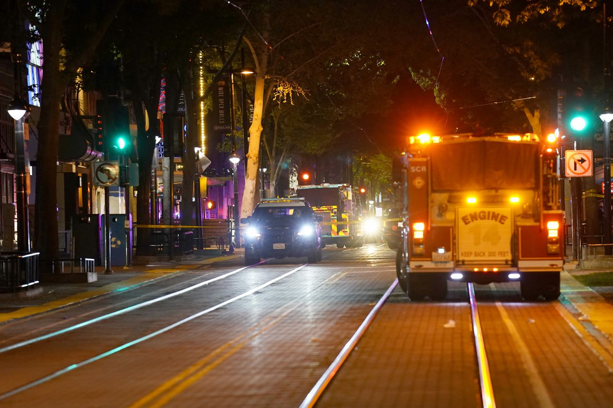
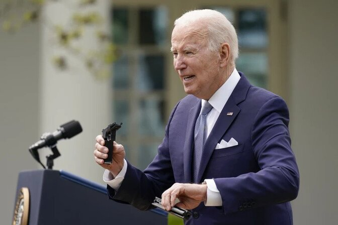
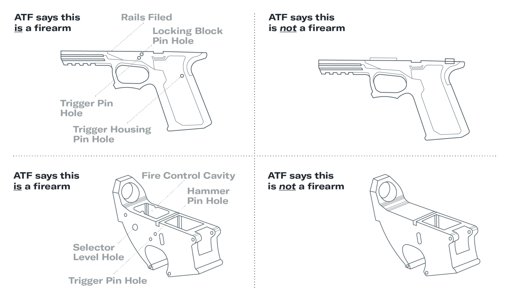
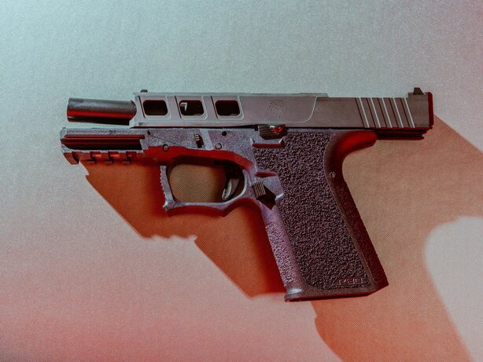

Ghost guns are leading to sharp increases in American gun violence

In the aftermath of a mass shooting in downtown Sacramento, California, that left six people dead and injured at least 12, President Joe Biden used a Sunday submarine commissioning ceremony to reiterate his call for stronger gun regulations.
Earlier in the day, New York Mayor Eric Adams went on CBS and decried the flow of guns not only into his city, but inner cities across the US, as the country looks for ways to confront a gun violence problem that shows no signs of abating.
"It continues to be a problem. You can't trace them."
What both leaders also highlighted in their calls was the proliferation of ghost guns: the unregulated, easily acquired and untraceable weapons that have been recovered from crime scenes with increasing frequency and has lawmakers and law enforcement officials across the country sounding the alarm.
President Biden issued a statement on Sunday calling on Congress to act and, among other initiatives, to "Ban ghost guns. Require background checks for all gun sales. Ban assault weapons and high-capacity magazines. Repeal gun manufacturers' immunity from liability. Pass my budget proposal, which would give cities more of the funding they need to fund the police and fund the crime prevention and intervention strategies that can make our cities safer."

Speaking on CBS's Face The Nation, Adams said, "We are dealing with the problem with ghost guns. It's imperative we come up with clear messages around ghost guns and the kits that assemble them. And I believe that Washington is going to do that."
Eugene O'Donnell, a former NYPD officer and current lecturer at John Jay College of Criminal Justice in New York, said the untraceable weapons not only add tension to a climate of political extremism and division while crime continues to rise nationally, but also could raise issues catching and prosecuting shooters.
"It continues to be a problem. You can't trace them," said O'Donnell. "In some cases it could mean not apprehending someone at all or it could raise the doubt about some cases where someone is claiming he's not the shooter."
A CNN analysis earlier this year of 2021 data found while ghost guns still make up a relatively small percentage of the total number of guns recovered by law enforcement, several cities reported sharp increases in the number of ghost guns recovered over time. San Francisco police told CNN they seized 1,089 guns in 2021, about 20% of which were ghost guns. In 2016, ghost guns made up less than 1% of total gun seizures in the city.
"It doesn't matter your age; it doesn't matter your criminal record; and they will send you either the parts or a kit."
Baltimore reported 352 ghost guns seized last year, while Washington, DC, reported more than 400 in 2021, up from 25 in 2018.
In New York, the city is on pace to again shatter previous years totals, according to data shared with CNN. In 2021, investigators recovered 375 ghost guns in the city compared to 150 in 2020, 50 in 2019 and 17 in 2018.
Through March 18 this year, the NYPD has seized 95 ghost guns, compared to 23 over the same period in 2021, according to NYPD Inspector Courtney Nilan, who heads the department's field intelligence program.

"They will sell you all of these parts or gun kits to make a fully functioning firearm with no background check, with no verification of who you are. All you need is a credit card," Nilan said.
"It doesn't matter your age; it doesn't matter your criminal record; and they will send you either the parts or a kit."
Nilan said her team has identified roughly 115 online retailers who send their ghost gun kits all over the country.
In Los Angeles, LAPD statistics show the city recovered 1,921 ghost guns in 2021, more than double the 813 recovered in 2020. That led LA District Attorney George Gascón to call out credit card companies in February, hoping they would place tight restrictions on purchasers.
"American Express, Mastercard and Visa have the ability to go beyond what any law enforcement agency, legislature or city council can accomplish," Gascón said in a news release. "We are asking these companies to join us in stemming the flow of ghost guns into our communities by preventing a ghost gun kit from being sold with a few mere clicks on a smartphone or computer."
Representatives for American Express, Visa and Mastercard did not immediately respond to a request for comment.
A representative from the LAPD told CNN the department did not start separately tracking ghost gun recoveries until 2020. But while the LAPD now tracks those weapons, plenty of police departments around the country do not, leaving the actual number of how many ghost guns are out on the streets unknown.
"ATF provides the ability to trace firearms to our law enforcement partners, but many do not submit privately made firearms," ATF spokesperson Cara Herman told CNN in a statement. "Additionally, ATF is often not the lead law enforcement agency in an investigation and may be unaware of local or state law enforcement agencies with privately made firearms in their possession."
According to ATF statistics, from January 1, 2016, through December 31, 2020, approximately 23,906 suspected ghost guns were reported to ATF as having been recovered by law enforcement from potential crime scenes, Herman said in the statement. That includes 325 homicides or attempted homicides, and that were attempted to be traced by ATF, Herman said in the statement.
Law enforcement continues arresting those in possession of ghost guns. A Rhode Island man was arrested in New York in January for allegedly selling or attempting to sell more than 100 guns he produced at his home, according to the US Attorney's Office Southern District of New York.
Robert Alcantara, 34, was charged with one count of conspiracy to traffic firearms and one count of making false statements, the US Department of Justice said in a news release.

In Baltimore, four men were charged with conspiracy and with selling illegal firearms, which included ghost guns, in March. Along with the weapons, investigators found a 3D printer, which can be used to make part of the weapon, according to a news release from the US Attorney's office in Maryland.
On Monday, Samuel Fisher, 33, a QAnon conspiracy theorist who participated in the January 6th Capitol insurrection in Washington D.C., was sentenced to three-and-a-half years in prison for illegally possessing loaded firearms in his Manhattan home, which included an assault rifle, a hand gun, and a ghost gun, along with high capacity magazines, according to a news release from Manhattan District Attorney Alvin Bragg.
Fisher's attorney, Wayne Gosnell, said his client was given a "tough but fair sentence."
"Samuel Fisher is a dangerous conspiracy theorist who participated in one of the gravest attacks on our democracy," Bragg said in a statement. "Not only did he threaten to commit violence against his fellow citizens, he had the potential to follow through with his arsenal of advanced weaponry and ammunition."